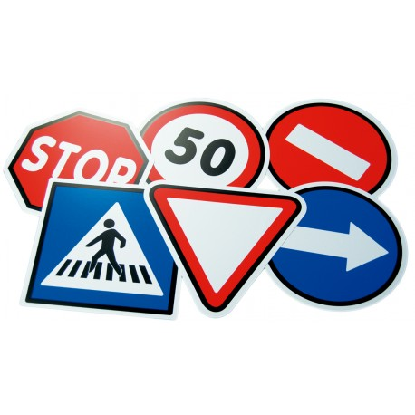
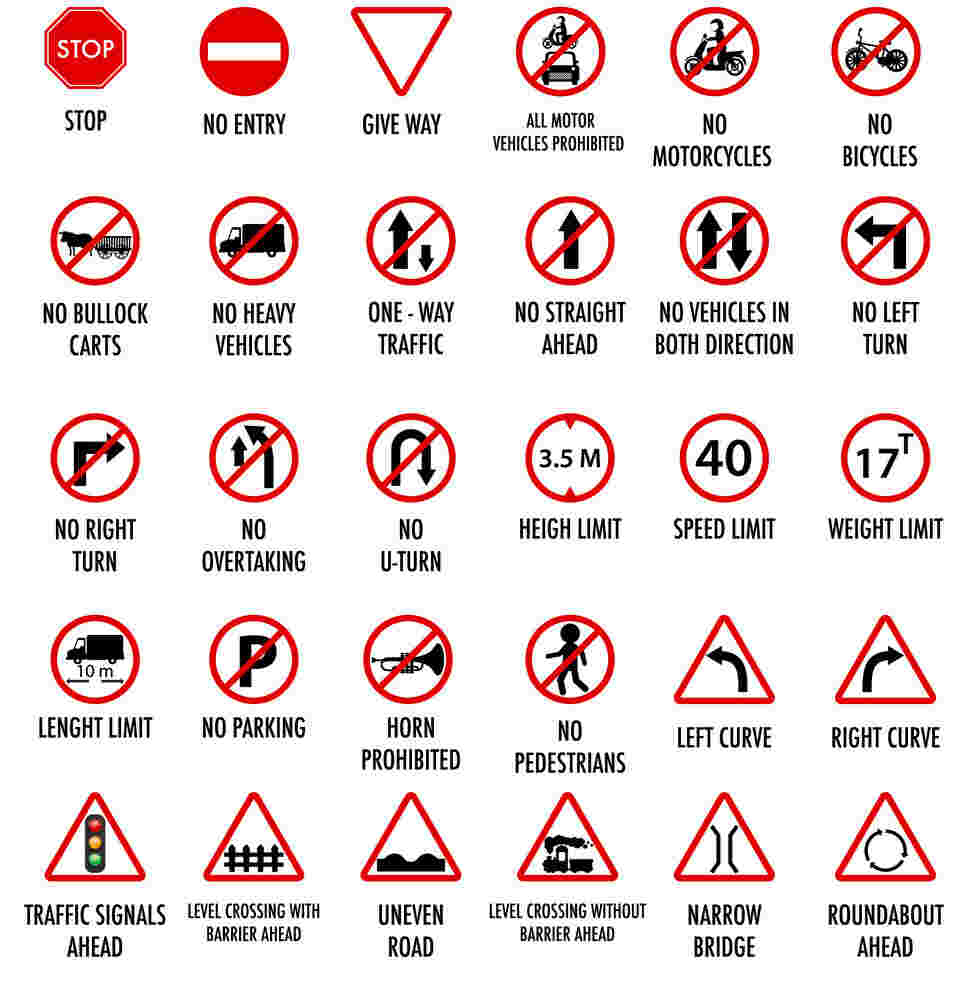
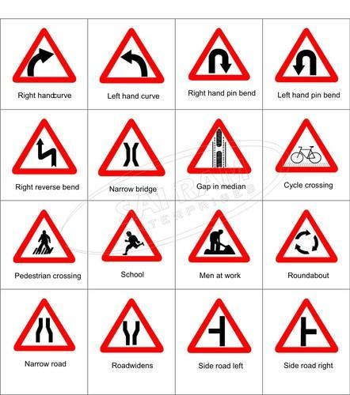
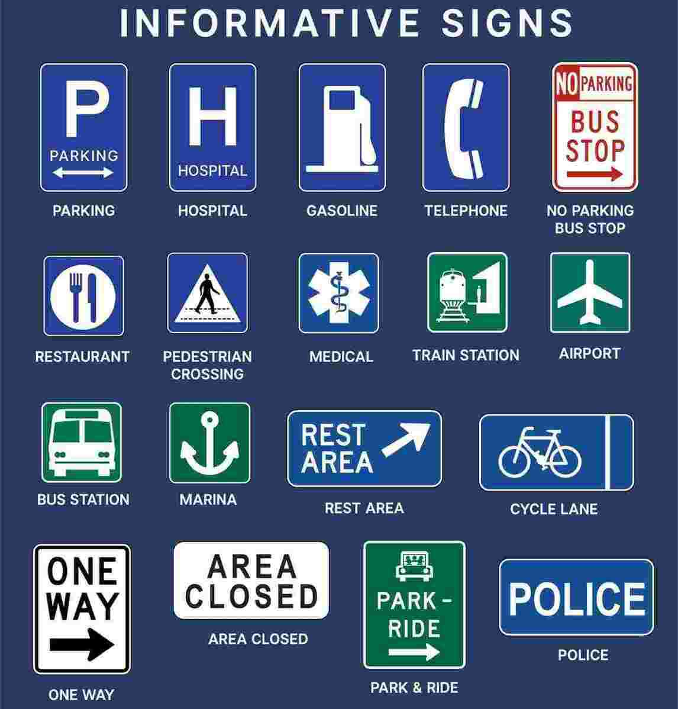

Important Traffic Signs to Follow in India
Traffic signs are the salient speakers, preventing drivers and pedestrians from fatal risks on the road. More than 400 road accidents occur daily on Indian roads that cost lives and 3% of total annual GDP.
Therefore, it is important to know 3 main categories of traffic signs in India to ensure road safety.
Here we have listed details about traffic signs in a consolidated form to make it easier to understand.
What Are the Traffic Signs in India?

Understanding traffic signs is crucial for optimum safety on the road. These traffic signs communicate the basic rules and regulations of road safety in the form of extremely simple graphics that can be easily understood within seconds. In fact, any person applying for a driving license, for example, needs to be completely aware of all the traffic signs to pass the theoretical exam of a driving test. Discussed below are the various types of traffic signs or symbols for Indian roads.
Different Types of Traffic Signs in India
Common traffic signs in India are categorized under three heads -
1. Mandatory Traffic Signs

In India, all traffic signs are a must to follow. However, mandatory signs are compulsory and most important to follow. According to the Roadways and Traffic Department of India, failing to follow traffic rules and signs may incur a traffic penalty on the driver. It ensures that traffic movement remains smooth and pedestrians are aware of the movement of vehicles on the road, speed limit, no parking zones, etc.
2. Cautionary Traffic Signs

Among other traffic signs in India, cautionary signs warn drivers about potential threats or safety hazards ahead on the road. Drivers should take necessary steps or slow down their vehicles according to cautionary signs given on the road.
If you wonder how many traffic signs are there in India under the cautionary category, the answer is 40. For best understanding, the description of each sign is mentioned under their graphical symbol, although these symbols are self-explanatory.
3. Informatory Traffic Signs

Informatory signs are important traffic signs that help drivers with information about facility areas even without knowledge of the map. It tells about a hospital, petrol pump, public toilet, etc., in the nearest vicinity.
Importance of Traffic Signs in Daily Life
Indian traffic signs have utmost importance in daily life on the road.
It helps -
- Smooth flow of traffic and avoid congestion.
- Save lives from the potential risk of accidents.
- Provide necessary information about the road ahead.
- Prevent road offences.
- In the navigation of routes.
For new drivers, these signs are extremely helpful in a smooth driving experience.
The traffic signs chart in India is updated by the Roadways and Traffic Department of India to maintain a better road traffic system.
What Are the Functions of Traffic Signs in India?
The various traffic signs used in India have an array of functions. These are -
- Supports drivers with information about the road, facility around, lane to drive in, etc.
- Ensures road discipline
- Provides road instructions
- Provides information about crossroads, potholes, curves, etc.
- Marks the entry and exit points
- Informs about parking areas
- Informs about maintaining the desired speed limit while crossing any institutes to prevent accidents
There are several other types of traffic signals in India, such as:
- Hand signal by traffic police.
- Pavement marking or road marking signs.
- Traffic light signals
Besides road accidents, traffic signs save from incidents of road rage, profanities, aggressive acceleration, etc. According to the New Motor Vehicle Act of 2019, penalties for breaking traffic rules are made strict and incur higher penalties. Therefore, it is advisable to know all traffic signs and follow those.